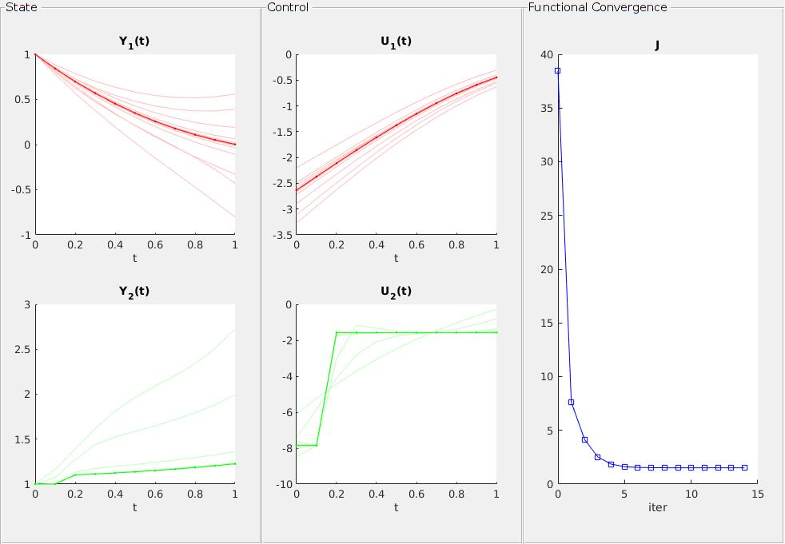

DyCon Toolbox is a package for MATLAB dedicated to the resolution of control problems.
DyCon Toolbox solve the following problem :
|
 |
Main Features
-
Symbolic Interface
This toolbox uses the -
Non-linear dynamics
Non-linear dynamics is the first implementation in the toolbox. Our idea is to cover very general problems in a few lines of code. -
Scalable
This Toolbox is a container of different optimization algorithms, where new methods can be developed within a structure already built and with reusable functions, for the comparison of results.
The DyCon MATLAB toolkit is developed primarily by the Chair of Computational Mathematics, at DeustoTech. However, we welcome any improvement in the computational platform. Contact the DyCon Toolbox developer team dycon-dev-group@deusto.es for more information.